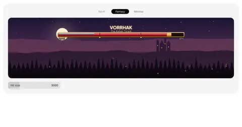
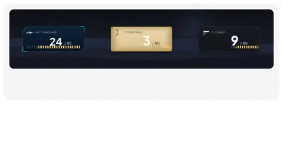
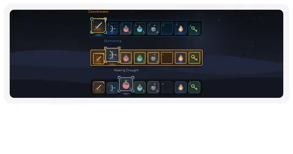
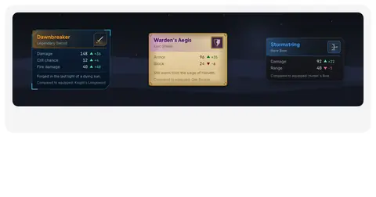
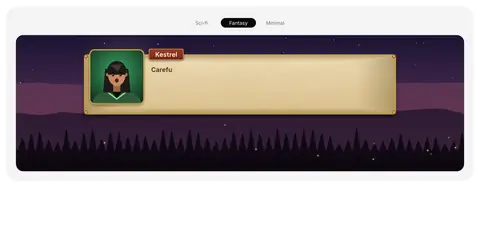
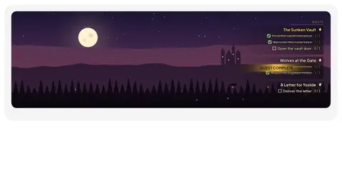
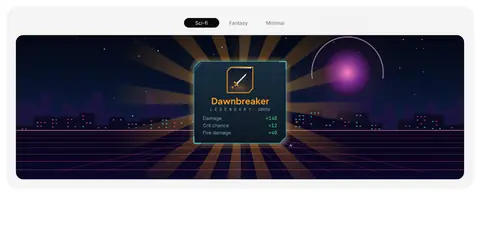
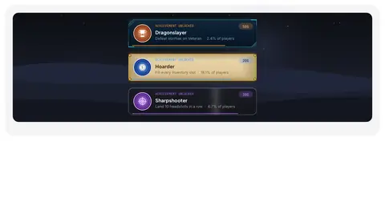
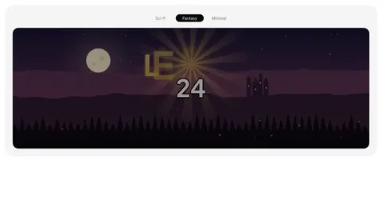

Game UI for Rust: menus, HUDs and inventories
Game interface pieces that take plain game state each frame: main and pause menus, HUD bars with damage trails, minimaps, ammo counters, cooldown icons, hotbars, inventories with tooltips, skill trees, dialogue boxes, quest trackers, loot and achievement popups, kill feeds and scoreboards. Works in Bevy through bevy_egui.
All Game UI components

Game HUD
Game UIA full shooter / RPG HUD over a live scene: health and mana with damage trails, ability cooldowns, ammo, minimap, kill feed and a dynamic crosshair, all driven by simulated gameplay.

Main Menu
Game UIA title screen over a parallax scene: the title drops in letter by letter and breathes with a glow, entries stagger in and slide on hover, and every hover / confirm is reported as a sound cue.

Pause Menu
Game UIA pause overlay: the running scene slows to a stop and dims into a vignette while the panel springs in with play info and staggered menu entries.

Settings Panel
Game UITabbed game settings for graphics, audio and controls: segmented sliders, springy toggles, arrow selectors and key rebind rows that capture the next key you press.

Health & Mana Bars
Game UIHealth, mana and stamina bars in three skins: damage cuts the fill and leaves a delayed trail that drains after a beat (with sparks and shake), heals pour in with a green ghost and rising pluses, low health pulses red.

Boss Bar
Game UIA wide boss health bar with the name glowing above, phase notches that fire a flash, ring and sparks when crossed, an armor layer and an enraged pulse in the final phase.

Minimap
Game UIRound and square minimaps with procedural terrain, fog of war that clears along the explored trail, a player arrow with view cone, pulsing enemies, rippling pings and objectives pinned to the rim.

Ammo Counter
Game UIMagazine and reserve counters: each shot kicks the number and ejects a spinning casing, low ammo pulses amber, an empty magazine flashes RELOAD and the reload sweeps rounds back in.
Cooldown Icons
Game UIAbility slots with a radial cooldown sweep, a bright hand on the edge and seconds left; coming off cooldown flashes white, pops on a spring and throws a ring of sparks.

Hotbar
Game UIItem hotbars where the selected slot springs up and grows with a glow beneath, its name popping up above; select by click, scroll wheel or number keys.

Inventory Grid
Game UIDrag-and-drop inventory: items glow by rarity (legendaries run a light beam around their slot), lift out with a lagging tilt, swap with a springy landing, and show a tooltip card comparing stats with your equipped gear.

Item Tooltip
Game UIItem tooltip cards with a rarity-tinted header, stats compared to the equipped item (green and red arrows with deltas) and flavor text, in all three skins.

Skill Tree
Game UIA skill tree where unlocking sends a surge of energy down the link before the node pops, rings and sparkles alight; available links shimmer, locked ones stay faint, and hovering shows a card.

Dialogue Box
Game UIAn RPG dialogue box with a painted portrait that blinks and talks, a name plate, typewriter text with a glowing caret, and player choices that stagger in when the line finishes.

Quest Tracker
Game UIA HUD quest tracker: new quests slide in flagged NEW, counts pop as they go up, finished objectives tick with a burst and a sweeping strike-through, and completed quests light up with a banner.

Quest Log
Game UIA quest journal: main and side quests on the left with a gliding highlight, the selected quest's story, objectives with filling progress bars and rewards on the right.

Loot Popup
Game UIA loot reveal: an orb in the rarity color charges and trembles, then bursts into a flash, shock rings, particles and god rays as the item card springs out with its stats.

Achievement Toast
Game UIAchievement toasts that drop in on a spring, pop their badge with a ring and sparks, sweep a sheen across the card and count down before sliding away.

Damage Numbers
Game UIFloating combat text over a training target: normal hits pop and arc away, crits slam in golden with a starburst and shake, heals rise green, misses slide off. Click the scene to land crits.

Crosshairs
Game UIA set of dynamic crosshairs (cross, dot, circle, chevron, brackets, scope) that open on a spring as spread grows, with white hit markers and red kill markers.

Loading Screen
Game UIA loading screen with drifting level art, the level name in the corner, rotating gameplay tips, a progress bar with a moving sheen, a styled spinner and a pulsing prompt at 100%.

Level Up Screen
Game UIA level-up moment: rays wheel open, LEVEL UP slams in letter by letter with a shake, the level number rolls over, confetti bursts and stat gains pop in one by one.

Kill Feed
Game UIA kill feed where new kills punch in from the right with a flash, old ones fade and the rest glide up; headshots get a skull and your own kills a bright frame.

Scoreboard
Game UIA two-team scoreboard: rows stagger in, re-sort with springy moves as scores change (the new score pops), the local player glows, dead players dim with a skull and ping shows as signal bars.

Character Select
Game UIA hero select carousel: cards ride a spring along an arc with the chosen one tall and glowing, the scene tints to the hero's color, stat bars refill and the confirm button breathes.